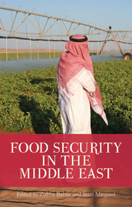

Sources
Where our information comes from...
Source
Book
Babar, Z. and Mirgani, S., 2014, Food Security in the Middle East, Hurst Publishers, London. Chapter 6: Mundy, M., Al-Hakimi, A. and Pelat, F., “Neither Security nor Sovereignty: The Political Economy of Food in Yemen”, pp. 135-158.

Source
Websites
Food and Agriculture Organization of the United Nations, 2026, “Yemen”, FAO Family Farming Knowledge Platform, accessed 8 September 2026. Yemen Family Farming Knowledge Platform

Food and Agriculture Organization of the United Nations, 2026, “Areas of Work: FAO in Yemen”, accessed 8 September 2026. FAO in Yemen: Areas of Work
Food and Agriculture Organization of the United Nations, 2023, “Agricultural Water Deficit Trends in Yemen”, accessed 8 September 2026. FAO: Agricultural Water Deficit Trends in Yemen
World Bank, 2026, “World Development Indicators: Yemen Population”, accessed 8 September 2026. World Bank DataBank: Yemen Population
United Nations Office for the Coordination of Humanitarian Affairs, 2026, “Yemen Humanitarian Needs and Response Plan 2026”, United Nations in Yemen, accessed 8 September 2026. UN Yemen: Humanitarian Needs and Response Plan 2026
Integrated Food Security Phase Classification, 2026, “Yemen: Acute Food Insecurity Situation for March-May 2026 and Projections for June-September 2026 and October-December 2026”, accessed 8 September 2026. IPC Yemen Food Security Analysis
Source
News & Journal Articles
World Bank, Mekonnen, D. and Temaj, K., 2026, “Food prices feel the heat as war in the Middle East rattles commodity markets”, World Bank Blogs, 22 May 2026, accessed 8 September 2026. World Bank: Food prices and the Middle East conflict
Gadain, H. and Libanda, B., 2023, “Agricultural Water Deficit Trends in Yemen”, Atmosphere, 14(8), accessed 8 September 2026. FAO record for Agricultural Water Deficit Trends in Yemen
World Food Programme, 2026, “Nearly half of the population in Government-controlled areas of Yemen face acute food insecurity as humanitarian support sharply declines”, 3 June 2026, accessed 8 September 2026. WFP: Yemen food insecurity 2026
Food and Agriculture Organization of the United Nations, 2020, “Solar powered water pumps offer lifeline for Yemeni farmers”, 20 March 2020, accessed 8 September 2026. FAO: Solar-powered water pumps in Yemen